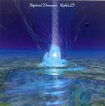

| Artist: | Kalo |
| Title: | Spiral Dream |
| Label: | Musea/InterMusic FGBG 4543/IM-001 |
| Length(s): | 58 minutes |
| Year(s) of release: | 2004 |
| Month of review: | [07/2004] |
| 1) | Dharani | 4.01 |
| 2) | A Voice In Blue | 5.56 |
| 3) | Forest Fairies | 4.48 |
| 4) | Sunset | 3.41 |
| 5) | Eternity | 3.29 |
| 6) | Land Of Spirits | 5.58 |
| 7) | Rerakamuy | 5.15 |
| 8) | Into Existence | 3.39 |
| 9) | To The Memory Of A Person | 4.15 |
| 10) | Sensitive Air | 4.23 |
| 11) | Gleam | 6.22 |
| 12) | Spiral Dream | 6.02 |
The three vocal tracks -despite their English titles- are sung in Japanese. We get the more typical Japanese vocals: somewhat insecure and off key, at times painfully so, with a dreamy feel about them. Rerakamuy does have a nice guitar solo though (with artifical drums), cranking its appeal up a bit.
Aside from the apparently live drumming of Koro Uemura, there are also some drum computer sounds. The harshness of these sounds stands in sharp contrast with the gentleness this album breathes. And that doesn't work out very well. Even though these drum effects do not last very long in general, they attract the attention in the most horrible way when they come along. The final vocal track vaguely reminds me of More Than A Woman (yes, I do mean that one). As if my mood needed a plummet.
Into Existence and Sensitive Air are sudden flashy tracks, reminiscent of Tangerine Dream round 1986, both in musical style and use of keyboardsounds. With even more crappy drum sounds, irritating background loops pushing to the fore and a lot of neuroticism this forces itself on one. Even while it's pretty, well, bad, really.